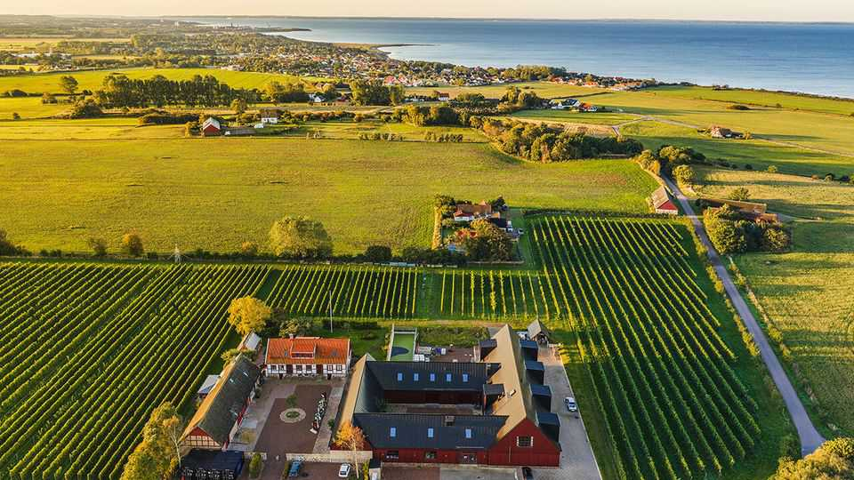
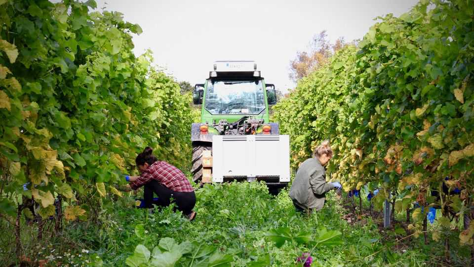

World-class wine is being made in a corner of Sweden. Yes, Sweden
A wine from Skane, the “Nordic Tuscany”, beat all comers in a blind tasting

Aug 20th 2026
AT THE NOBEL PRIZE banquet in Stockholm in December, not all the winners were seated at the table. A victor of a different kind could be found in the diners’ wine glasses. In 2024 a blind tasting had pitted a dozen of Europe’s finest wines against a dozen wines from Sweden. An international panel of 18 independent experts declared Immelen, a white wine from Kullabergs, a winery in the Skane region of southern Sweden, the overall winner, above famous whites from France, Italy and Spain. That made Immelen the obvious choice for the Nobel banquet. It was a coming-out party for Swedish wine.
Sweden is “a young wine country”, says Victor Dahl, chief executive of Kullabergs. EU approval for winemaking in Sweden and Denmark, required for commercial production, was granted only in 1999. There are now about 50 commercial wineries in Sweden. Sales are still tiny—just a drop in the barrel by global standards—but growing quickly.
At the Nobel banquet, Mr Dahl moonlighted as a waiter so he could hear what the diners thought. Such was their level of interest that he was soon unmasked and invited to introduce the wine. “They had so many questions,” he recalls.
And no wonder. That wine can be made in Sweden at all may come as a surprise. Global warming has helped. But “climate change is also bad for us,” says Mr Dahl. Although the climate is warmer overall, it is also unpredictable: since 2018 every growing season has been different. Sweden’s long summer days provide plenty of sunshine to ripen grapes. Indeed, slower ripening may enhance flavour.
Immelen is a blend. It is two-thirds Solaris, a descendant of Riesling and Pinot Gris created in 1975, and now Sweden’s most widely planted varietal. The rest is Souvignier Gris and a dash of Muscaris (a cross between Solaris and Muscat). The resulting wine is surprisingly full-bodied, with none of the under-ripeness often found in cool-climate wines. It reminded this correspondent of a high-end Sancerre.

Just as significant as climate change has been the rise of New Nordic cuisine, a gastronomic culture centred on Copenhagen and Malmo. Skane is sometimes referred to as the “Nordic Tuscany” and is being promoted as a tourist destination for foodies. In this part of the world seasonal tasting menus abound, and foragers gather local ingredients for restaurants. Magnus Nilsson—whose previous restaurant, Faviken, earned two Michelin stars—has recently opened a new one in Skane, as has Titti Qvarnstrom, the first Swedish woman to win a star. Being able to serve local wine with local food has obvious appeal.
History has also played a part. Sweden’s government ran a campaign from 1957-85 to encourage Swedes to drink wine, rather than spirits, for health reasons. This created a strong wine culture just as European travel was getting cheaper, prompting Swedish wine buffs to engage in wine tourism. But now they can do it at home. The covid-19 pandemic helped, too: Swedish wine critics who were unable to go abroad started to pay more attention to the viticulture scene on their doorstep.
Oddly the Systembolaget, the government monopoly on the sale of alcohol through a national network of shops, has also helped. It bans Swedish wineries from selling bottles over the counter, though they can sell wine for consumption on the premises, for example at an on-site bar. To get into the Systembolaget shops, Swedish winemakers must achieve consistent quality and volume. Systembolaget acts as “an extraordinary quality-control mechanism”, says Joe Fattorini, a British wine guru who now lives in Sweden. Once a winery wins approval, as Kullabergs has, distribution is in effect handled by the government.
The contrast with neighbouring Denmark, which lacks such restrictions, is telling. Denmark has fewer hectares of vines than Sweden, but roughly three times as many producers and a wider range of styles. That means more experimentation, but greater variation in quality.
Things are changing in Sweden, however. After much lobbying, the law was changed to allow “cellar-door sales” by wineries from June 2025. There are still restrictions—sales are permitted only as part of an educational experience lasting at least 30 minutes—and the rule-change is subject to a six-year trial. Sweden’s wine industry is still in its infancy and lacks the long history of winemaking in other parts of Europe. But you do not need a Nobel prize to see its potential. ■